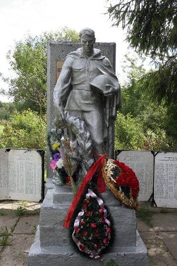

Освобождение Волосовского района
26 января 1944 года, в ходе операции "Январский гром" , по полному освобождению Ленинграда от блокады, советскими войсками освобожден город Волосово, а 27 января считается датой окончательного снятия блокады Ленинграда.
25, 26 января узловая станция Волосово, через которую идут эшелоны отступающей немецкой армии, подвергается активным бомбардировкам авиацией Балтийского флота. Решающим эпизодом в освобождении района стал танковый бой в Губаницах. 26 января, в котором полегла 30-я отдельная гвардейская тяжелая танковая бригада, со своим командиром полковником В.В. Хрустицким.
Воины, отдавшие жизни в этом бою, захоронены в братской могиле на территории деревни.
В Волосово есть улица Хрустицкого. Но память о бойцах 30-й отдельной гвардейской тяжёлой танковой бригады почти не сохранилась в топонимике района Почему другие солдаты лежат забытыми в Губаницкой земле? Зато сколько улиц с равнодушными, безликими названиями, говорящими лишь об убогости фантазии авторов: Интернациональная, Советов, Лесная, Садовая, Полевая, Луговая, Зеленая, Парковая, Энтузиастов, Новая, Новоселов, Милиционеров. Или переименование дорого? Деньги бережем...
Нет топонимов хранящих память ни о 30-ой танковой бригаде, ни о 2-ой ударной армии. Только слова. Один раз в год на 9 мая.